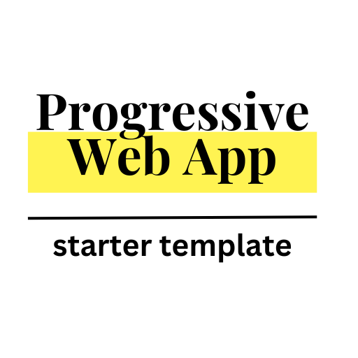

Dive into the code to start your PWA.
To learn more about Progressive Web Apps, try these tutorials:
Microsoft Learning
Web Dev
MDN Web Docs
You can send notifications from your OS in a web browser. Click the button to see a random quote. How cool!
note: this feature is not supported on all browsers or devices.
Request Notification